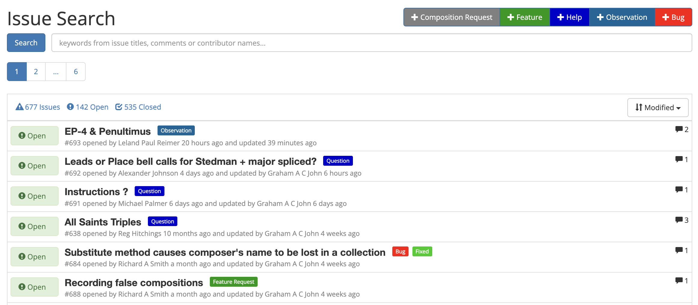

Composition Library Help
The Composition Library, also known as Complib, is an interactive tool for all change ringers, not just conductors and composers. It is intended as a comprehensive reference for methods and compositions and has a number of useful features. For example, you can:
- Search for existing methods and compositions by name, title, or a large number of other criteria;
- Display the blue line of methods or compositions, as well as other detailed information;
If you register for an account, you will gain the ability to contribute material to the Composition Library, and take full advantage of its more powerful tools. For instance, you will be able to:
- Define new compositions and methods.
- Create collections of methods or compositions (e.g. your personal favourites, or the hottest new 23-spliced).
- Find compositions which are true to a particular method, or methods which are true to a particular composition via an extended search.
Registered users can also ask questions, raise issues and request bespoke compositions from other Complib users.
Using the Help
You can navigate the Help by using the sidebar: simply click on the section you'd like to read. Clicking on a section will expand it to show any subsections it contains.
You can also look for help on a specific topic using the search field at the top of the sidebar.
Giving feedback
Our hope is that this Help documentation can help you get to grips with Complib and how it works. That being said, the Composition Library is a work-in-progress, and the Help is no different. You can provide feedback on the Help via Complib's Issues page.

When raising a Help-specific issue, please use the dedicated Documentation issue type, as that will allow us to deal with it separately from issues specific to Complib itself.
When to raise an issue
If...
- you encounter a problem when using the Help;
- you notice something about the Help which doesn't seem correct (and you're reasonably sure);
- you have feedback about a section of the Help which is unclear or could be expanded upon;
- you have feedback about the way the Help is structured;
then these are good reasons to raise an issue.
When not to raise an issue
There are certain circumstances under which we would ask you not to raise an issue.
Change ringing is an art with a very long history, and its technical aspects have been subject to constant development within the change ringing community for centuries. Complib is intended to serve the needs of change ringing as it is currently practised. To this end, both Complib and the Help reflect the current Central Council Framework for Method Ringing wherever possible.
Neither Complib itself nor this Help documentation are designed to act as fora for debate on the details of the current Framework, nor indeed should they. Such debate is a crucial part of change ringing culture, but this is not the appropriate place for it.
A Note on Terminology
The change ringing terms used in this documentation are those specified in the Central Council's Framework for Method Ringing, and reflect the definitions given there. It is assumed for the purposes of using the Help that you are familiar with at least some of this language.
Definitions have been included in the Help wherever it is felt this might aid understanding. However, the Help is not intended as a replacement for the Central Council Framework, and does not attempt to give exhaustive definitions for every term used.